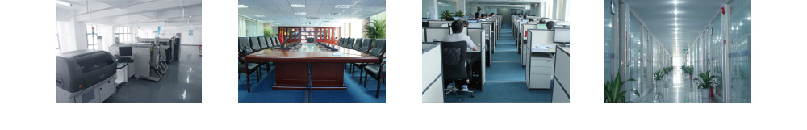
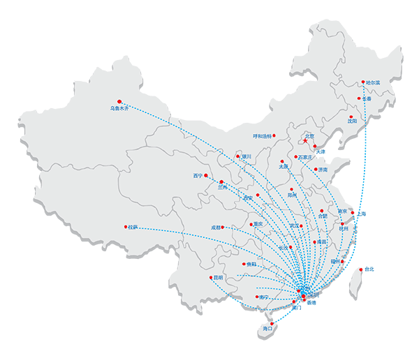

深圳市华威世纪科技股份有限公司（简称“华威世纪”）成立于2003年，专注安全监管行业软硬件研发和生产、销售、系统集成、IT运维服务、信息安全服务，是国家火炬计划重点高新技术企业、重点软件企业。
公司从事安全监管行业信息化建设多年，并率先进行移动互联网、云计算、大数据、物联网等新一代信息技术及软硬件产品的自主研发，公司形成了可信计算技术、智能分析技术、RFID射频识别技术、点对点视频通讯技术以及智慧安监物联网平台技术等一系列行业领先的核心技术，能够为政府、矿山、企业用户提供软、硬件一体化的智慧安监、智慧矿山、智慧城市、安全云计算平台整体解决方案；利用基于公司自建的“智慧安监云计算中心平台”能够为用户提供基于云管理平台，以互联网线上自助服务的方式，提供云托管、云存储、云应用等云服务产品。
公司拥有发明专利20多项，软件著作权300多项，软件产品登记、科技成果登记各50多项，是国家科技部“国家火炬计划产业化示范项目”承担单位，“国家科技成果重点推广计划”项目承担单位，国家安监总局“安全生产科技发展计划”项目承担单位，国家工信部“信息技术示范工程”承担单位，并参与了由国家安监总局组织的国家安全生产标准的制订。
自2004年以来，公司连续承担“安全生产科技计划”项目的研发，并承担了国家、省、市、区科技计划项目。公司研发人员百余人，占比超60%，由首批工程院院士倪光南为公司首席科学家，牵头组建博士后创新实践基地，充分发挥自身技术优势，创新产学研结合模式，先后与中国科学院软件所、电子科技大学、复旦大学和哈尔滨工业大学等科研机构建立了战略合作关系，开展云计算、数据挖掘、物联网技术等高精尖技术的探索与创新。

凭借先进的经营理念、一流的专业人才、雄厚的技术实力，公司逐渐成为国内安全生产行业应用的领军企业，市场份额遥遥领先，用户遍布广东、福建、江西、山西、陕西、河北、甘肃、山东、四川、安徽、云南、湖北、新疆、青海、西藏等省市。承担建设了佛山智能安监管理平台、江苏煤矿安全远程监管监察平台等一批国内领先的、国家级示范工程。

公司秉承“互联网+智慧安监”战略发展思维，基于自主研发的新一代信息技术及软硬件产品等多项核心技术，借助“互联网+”增量、增益、增效的优势，构建集政府监管部门“防、管、控”三大业务于一体、具有高度智能化和前瞻性的“互联网+智慧安监”大数据分析平台，服务于以安全监管为核心领域，同时基于公司核心技术优势与先进产品应用于城市管理、环境保护、水利监测等领域。